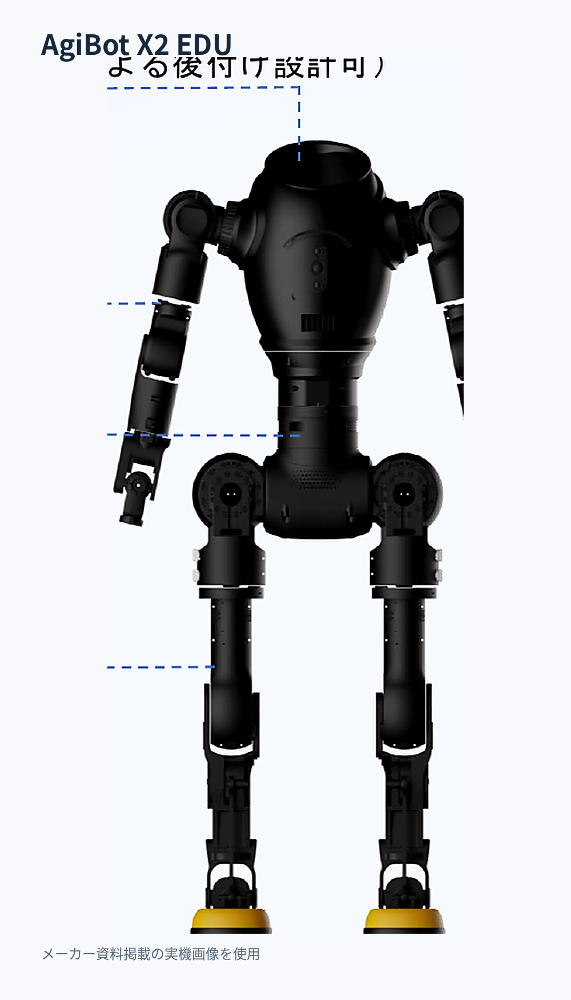

X2 EDU / EDUCATION & RESEARCH
X2 EDUで、組み立てから制御・開発まで学ぶ。
X2 EDUは、完成品の利用だけでなく、組立、調整、運動制御、ROS2・DDS、外部センサー連携を研究・教育テーマとして扱う候補です。価格、発売状態、納期、日本向け提供条件は正式確認を前提に整理します。

WHY X2 EDU
組み立て・調整・制御を、ひと続きの実習へ。
完成品の操作だけでなく、機構・配線・関節調整・動作検証・ソフトウェア開発を授業や研究に取り入れたい教育機関向けの選択肢です。組立担当者・必要工具・安全管理は導入前に確認します。
EDUCATIONAL USE CASES
教育・研究での活用を4つの目的から考える。
機械・電気の実習
構造、関節モジュール、接続と組立手順を学ぶ。
ロボット制御
姿勢、関節状態、歩行制御の理解と検証に取り組む。
ROS2・ソフトウェア
SDK・DDS・簡易シミュレーションを教材として検討。
PBL・研究開発
実験テーマに応じて計測、評価、追加開発条件を整理。
PRODUCT IMAGE / MANUFACTURER SOURCE
メーカー資料の本体画像と、組立キットの確認ポイント。
購入する前に、部品キットと完成品の違いを確認
メーカー資料には、分解・組立実習や部品キットが紹介されています。ただし、工具・教材・交換部品などの同梱内容は見積対象の構成によって異なるため、正式部品表で照合します。
中国語の説明付き動画、出典未確認の組立写真、AI生成の本体画像は掲載していません。
EVERYONE BUILDS 2.0 / LEARNING FLOW
組み立てから運動制御、ソフトウェア開発まで。
メーカーの2026年6月版製品資料に基づく学習フローです。実際に提供される教材・SDK・部品は契約構成により確認します。
01 構造を理解
腕・脚・腰・電装、関節モジュールと部品レベルの構成を学びます。
02 分解・組立
工具、配線、固定、消耗品を使った工学実習を想定します。
03 調整・動作検証
関節原点調整、状態監視、歩行・姿勢制御を扱います。
04 ROS2・DDS開発
上位運動制御、関節制御、MuJoCoベースの簡易シミュレーションを学びます。
HARDWARE / MANUFACTURER DOCUMENT
本体構成と主要仕様を原典に沿って確認。
| 全高・重量 | 約130cm／約35kg（資料記載値） |
|---|---|
| 能動自由度 | 29（腕7×2、腰3、脚6×2） |
| 演算・電源 | RK3588、48V 10Ah、500Wh（資料記載値） |
| 最高歩行速度 | 1.8m/s（資料記載値。実機条件で検証が必要） |
| 開発インターフェース | ROS2 SDK、DDS、上位運動制御、関節レベル制御、故障情報 |
| シミュレーション | MuJoCoベースの簡易環境に対応する旨の記載あり |
| 教育向け提供形態 | 部品キットと組立教材を想定。内容、購入条件、提供可否は確認中 |
| 改造時の保証 | メーカー資料では二次開発・追加改造後は保証対象外との記載あり。契約時に要確認 |
出典：2026年6月版 AGIBOT X2 EDU Everyone Builds 製品・ソリューション資料（社内保管）。正式仕様・納期・価格・日本向け販売条件は別途確認。
SELECTION GUIDE
学習目的によって、適切な教材は異なります。
シミュレーション中心
実機の組立を行わず、制御アルゴリズムを学ぶ用途。
固定ロボットアーム
固定環境での把持・軌道・操作実験を中心にする用途。
完成品ヒューマノイド
動作評価・アプリ開発を中心にし、分解・組立を重視しない用途。
X2 EDU
構造理解、組立・調整、全身制御を連続した教育テーマとして扱いたい用途。
これは学習目的による選定軸であり、メーカー間の性能・価格の優劣を保証する比較ではありません。
AFTER PURCHASE / LEARNING PROCESS
購入後の流れを、導入前に確認できます。
以下は検討時の一般的な進め方です。部品構成、作業担当、研修、納品・検収、保守契約は正式見積時に個別確認します。
- 導入条件の相談授業・研究テーマ、必要台数、予算、希望時期を整理
- 構成・契約条件の確認完成品／キット、付属品、教材、開発権限、保証範囲を確認
- 納品・検品品目と数量を照合。正式な同梱品表を確認
- 組立・校正学校側または契約上の担当者が、メーカー手順・安全条件に沿って実施
- 動作確認・実習定められた検収条件に基づいて確認し、授業へ利用
- ROS2開発・運用提供版SDK・権限を確認後、実験・保守を進める
CONFIGURATION & SUPPLY STATUS
「資料の記載」と「実際の同梱品」を分けて確認。
資料上の標準構成
ダミーハンド、リモコン、充電器の記載があります。日本向け正式販売構成での同梱を保証するものではありません。
資料上の選択品
Omnipickerグリッパは選択可能とされています。対象版・価格・取付条件は要確認。
キット構成の確認
別資料に部品キット・工具・消耗品の記載がありますが、胴体・頭部の一覧には重複疑義があります。正式BOMを確認します。
教材・開発環境
ROS2 SDK、DDS、MuJoCo簡易シミュレーション、組立ガイドの資料記載あり。提供方法・利用権・対象版は要確認。
FAQ
よくある確認。
CONTACT / EDUCATION
X2 EDUを授業・研究に導入できるか、まず確認しませんか。
研究・授業テーマ、必要台数、組立形態、開発環境、希望時期を伺い、メーカー確認が必要な条件を整理します。価格・納期・同梱品・保証は個別確認です。
資料内で数値表現が一致しない項目があります。正式見積前に対象バージョン、最終仕様、同梱物、保証、日本向け提供条件を確認します。